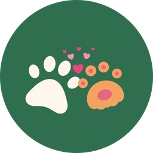

PetFinder Privacy Policy
1. Who we are
PetFinder is a free mobile app that helps owners find their lost pets through lost pet reports and stray animal sightings.
The controller of your data is Spyridon Kafkas, Greece. For any question about your data, contact petfinder.app.gr@gmail.com.
2. What data we collect and why
| Data | Why we need it | Who can see it |
|---|---|---|
| Email and password | To create and log in to your account. Your password is stored encrypted. | Only you. It is never shown to other users. |
| Username | Shown on your reports ("Posted by"). | All logged-in users. |
| Reports: animal photos, species, name, colour, description, date/time | The core purpose of the app: to locate animals and match lost reports with found reports. | All logged-in users. |
| Report location (point on the map and address) | So that reports are shown to people nearby and to calculate possible matches. | All logged-in users. |
| Your device's current location | Only while you use the app: to show animals within a radius around you and, if you choose, to fill in the location of a report. We do not track your location in the background and do not store it, unless you use it in a report. | No one (unless it becomes part of a report). |
| Contact details: full name and phone number | So that someone who may have found your pet can contact you (or vice versa). | Not public. Shown only to users who have their own report that matches yours (same species, nearby). |
| Notification identifier (push token) and app language | To send you notifications about possible matches and reunions, in the language you have chosen. | No other user. |
| Reports of inappropriate content and user blocks | For the safety of the community and to remove fake or inappropriate content. | Only the app administrator. |
We do not collect data for advertising, we do not build advertising profiles and we never sell your data.
3. Legal basis
- Performance of the service you request (account, reports, matches, notifications) – Article 6(1)(b) GDPR.
- Your consent for access to location, camera, photos and notifications, which you give (and withdraw) in your phone's settings – Article 6(1)(a) GDPR.
- Legitimate interest in keeping the app secure and handling abuse – Article 6(1)(f) GDPR.
4. Photo comparison with artificial intelligence
When a report is posted, its photos are automatically compared with photos from nearby reports to estimate whether they show the same animal. For this comparison we use the AI service Claude by Anthropic. Only the photos and the animal's details (species, colour, description) are sent to the service, not your contact details or email. The result is an estimate of similarity; the final confirmation is always made by the owner.
5. Who we work with (processors)
To run the app we use trusted providers that process data only on our behalf:
- Supabase – database, accounts and photo storage (servers in the European Union, Frankfurt).
- Anthropic – AI photo comparison (USA).
- Expo and Google Firebase Cloud Messaging – sending push notifications.
- MapTiler (with OpenStreetMap data) – displaying maps (receives your device's IP address when a map loads).
- Operating system location services (Google / Apple) – converting coordinates to addresses and address search.
Where data is transferred outside the European Economic Area (e.g. the USA), this is done with the appropriate GDPR safeguards, such as the European Commission's Standard Contractual Clauses or the EU–US Data Privacy Framework.
6. How long we keep data
- Reports: up to 90 days from when they are posted or last renewed. One week before a report expires we notify you, so you can renew it if the animal hasn't been found. When it expires, the report is deleted automatically together with its photos and contact details. It is deleted earlier if you delete it or if the animal's reunion with its owner is confirmed (both reports are then deleted automatically).
- Notifications: 7 days; you can also delete them earlier in the app.
- Reunions: we keep only the animal's name and species and the dates it was lost and found, without photos or contact details.
- Account: until you ask for it to be deleted. Deleting your account also deletes all your reports, photos and contact details.
7. Your rights
Under the General Data Protection Regulation (GDPR), you have the right to:
- access your data and receive a copy of it,
- rectification (e.g. change your username in "My profile"),
- erasure (delete reports in the app or delete your whole account),
- restrict and object to processing,
- data portability,
- withdraw your consent at any time (e.g. turn off location or notifications in your phone's settings).
To exercise any of these rights, write to us at petfinder.app.gr@gmail.com. We will reply within one month at the latest.
If you believe the processing breaks the law, you can lodge a complaint with the Hellenic Data Protection Authority (www.dpa.gr) or the data protection authority of your country.
8. Deleting your account
You can delete your account and all your data:
- in the app: My profile → Delete account, or
- by emailing petfinder.app.gr@gmail.com from the address you signed up with, with the subject "Delete account".
9. Security
All communication in the app is encrypted (HTTPS). Access to data is controlled by security rules in the database, so that each user can only change or delete their own data, and contact details are accessible only as described above.
10. Children
The app is intended for users over 15. If you are under 15, use it only with the consent and help of a parent or guardian.
11. Changes to this policy
If the way we use your data changes, we will update this page and, for significant changes, notify you in the app.